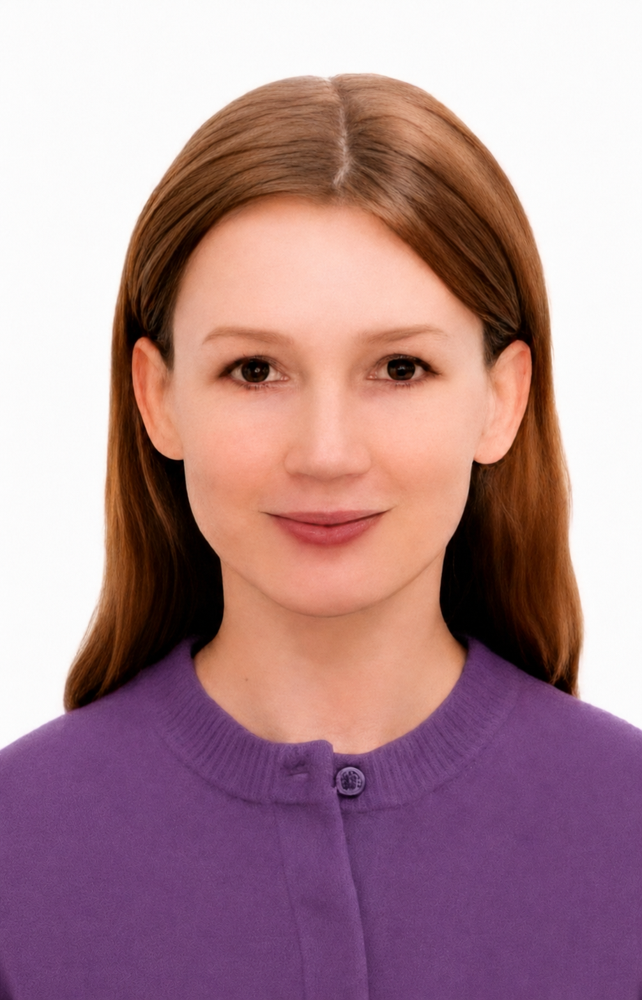

01
Real-time dialogue & turn-taking
Audio-only turn prediction, backchannels, barging, and dialogue control that combines acoustic timing with language-model context.
I am a PhD Candidate at the Hong Kong University of Science and Technology (HKUST), specializing in multimodal machine learning. My research studies how information from audio, vision, and language can be aligned, fused, and grounded to build more reliable and context-aware AI systems.

My research asks how audio can remain a grounded signal for machine decision-making when timing, prosody, semantic context, and uncertainty all matter.
I work on audio-grounded language models, conversational turn-taking, ASR reliability and hallucinations, and multimodal affective computing. A recurring theme is preserving information that is lost when speech is reduced to text alone.
Before my PhD, I completed an MSc in Speech and Language Processing at the University of Edinburgh and worked as a researcher at Huawei Research in Hong Kong.
Audio-only turn prediction, backchannels, barging, and dialogue control that combines acoustic timing with language-model context.
When ASR systems hallucinate, how adaptation affects those failures, and how reliability can be evaluated beyond WER alone.
Multimodal fusion, older-adult emotion recognition, and representation alignment across speech, vision, and language models.
Audio-Only Turn-Taking with Language Model Semantics and ERIT: A Responsible Multimodal Affective Computing Benchmark for Older-Adult Emotion Recognition in the Wild.
Recent and representative work. For the complete and most current record, see Google Scholar or ORCID.
Repositories for speech, multimodal learning, dialogue systems, and ongoing research projects.
Current publication metadata, citation record, and related work.
A persistent researcher identifier linking publications and research activity.